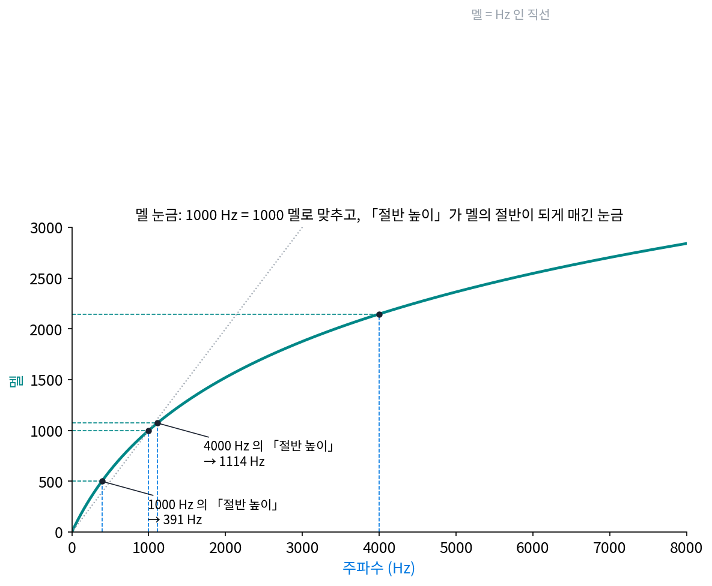
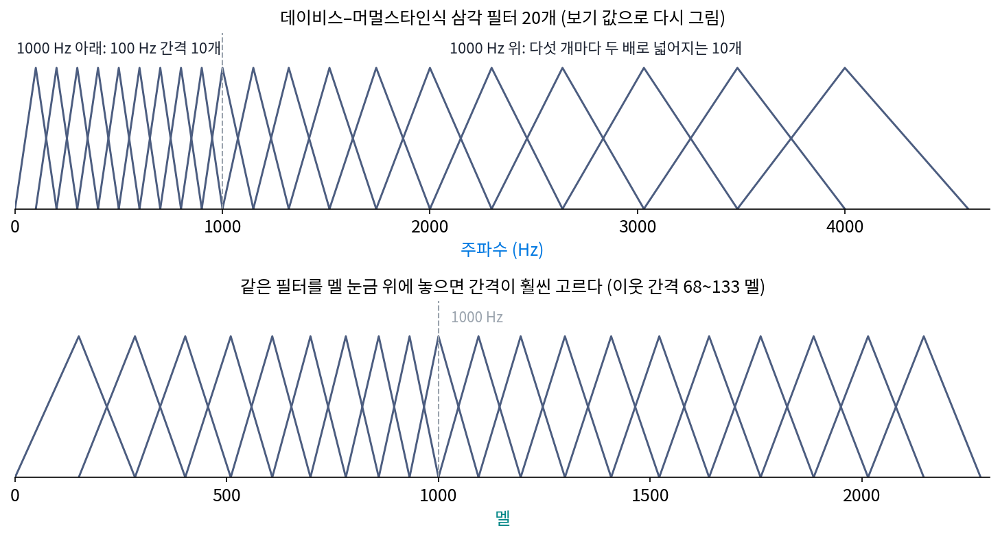
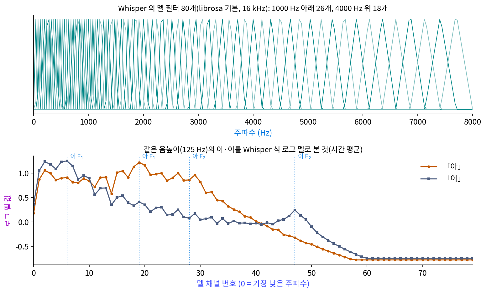
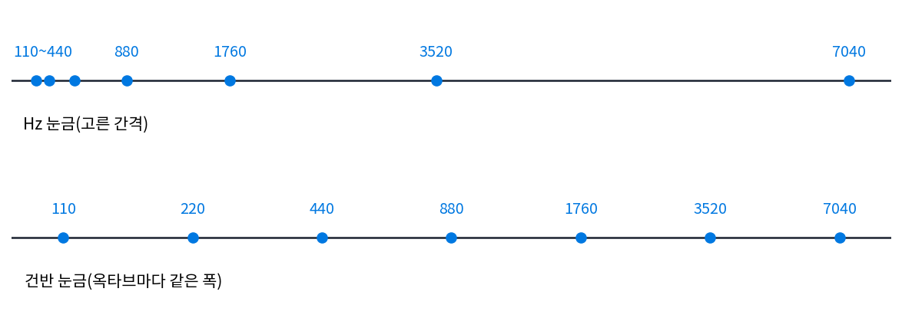
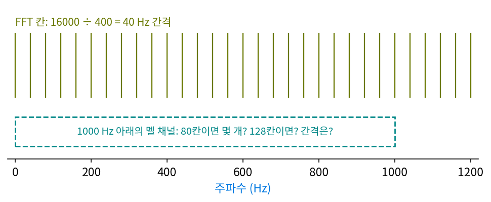
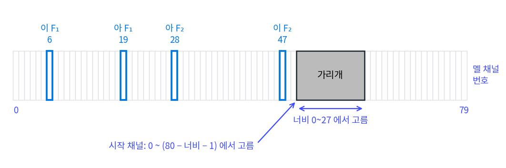
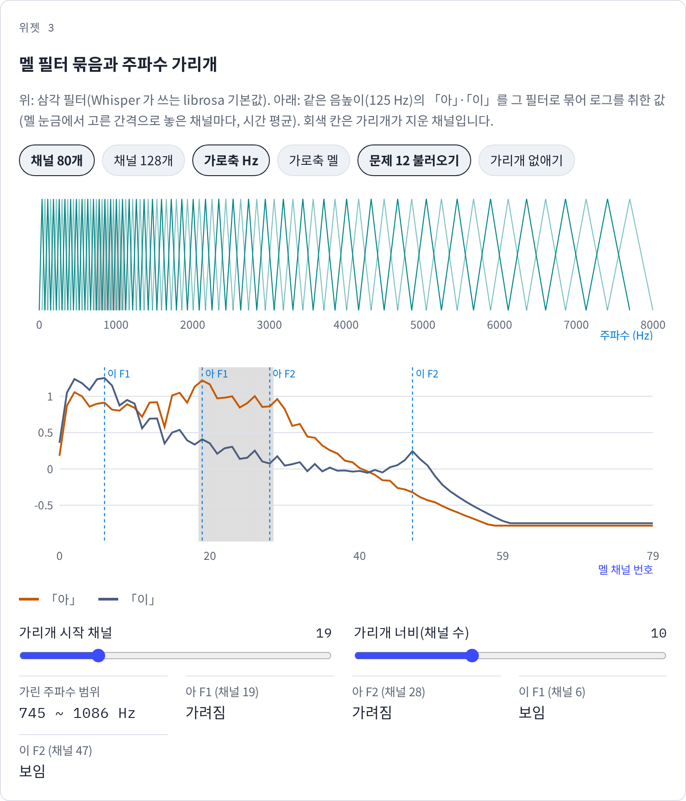

멜 눈금: 높은 음일수록 귀는 덜 촘촘하게 가른다
100 Hz와 200 Hz도, 5000 Hz와 5100 Hz도 100 Hz 차이다. 그런데 앞의 둘은 한 옥타브, 노래 한 소절이 한꺼번에 올라가는 차이로 들리고, 뒤의 둘은 웬만해서는 같은 소리로 들린다. 스펙트로그램의 세로축은 Hz로 고른 눈금이라 두 차이에 같은 높이를 준다. 0~8000 Hz를 그린 그림이면 위쪽 절반, 4000~8000 Hz가 그림의 반을 차지해서, 귀가 거의 가르지 못하는 곳에 칸을 절반이나 쓴다. 칸 수가 정해진 신경망 입력에서 칸을 주파수 축 어디에 촘촘히 두어야 할지 정하려면, 귀가 가르는 촘촘함을 재는 눈금이 있으면 좋겠다.
역사: 「절반 높이」를 맞추게 하다
하버드 대학교의 스티븐스(S. S. Stevens), 볼크먼(J. Volkmann), 뉴먼(E. B. Newman)은 1937년 『미국 음향학회지』 8권에 「음높이라는 심리적 크기를 재는 눈금」을 발표했다. 물리량 Hz는 기계로 재면 되지만, 「얼마나 높게 들리는가」는 사람에게 물어야 한다. 이들은 듣는 사람에게 기준음을 들려주고, 다른 음의 주파수를 직접 조절해 「기준음의 절반 높이」로 들릴 때 멈추게 했다. 논문 요약에 따르면 듣는 사람은 다섯이었고, 기준음은 소리 크기를 일정하게 맞춘 열 개 주파수(125 Hz부터 12000 Hz까지)였다. 그렇게 모은 답으로 만든 높이의 단위가 멜로디(melody)에서 이름을 따온 「멜(mel)」이고, 눈금의 기준은 1000 Hz 소리에 1000 멜을 매기는 것이었다. 1940년에 스티븐스와 볼크먼은 새 실험으로 눈금을 고쳐 다시 냈다.
1937년 논문에는 식이 없고, 표와 그래프만 있다. 오늘날 널리 쓰는 맞춤식 m = 2595 log₁₀(1 + f/700)는 나중에 이 곡선에 맞춘 것이고, 처음 누가 썼는지는 자료로 또렷이 확인되지 않는다. 이 식으로 1000 Hz의 절반 높이를 구하면 500 멜, 391 Hz로 주파수 절반인 500 Hz보다 낮다. 4000 Hz의 절반 높이는 1114 Hz로, 주파수 절반인 2000 Hz보다 한참 낮다.

멜 눈금이 음성 인식의 표준 입력이 된 데에는 데이비스(S. B. Davis)와 머멀스타인(P. Mermelstein)의 1980년 논문이 컸다. 이들은 남성 화자 둘이 문장 속에서 읽은 단음절 낱말 52개를 두고, 소리를 숫자 묶음으로 적는 여러 방법을 같은 인식기에 넣어 맞히는 비율을 비교했다. 삼각 모양의 띠 필터 20개를 1000 Hz 아래는 고른 간격, 그 위는 로그 간격으로 두고, 필터 출력의 로그를 다시 코사인 계수로 바꾼 10개(멜 주파수 켑스트럼 계수, MFCC)를 6.4 ms마다 구한 것이 두 화자에서 96.5%와 95.0%로 가장 잘 맞혔다. 이들은 MFCC 가 짧은 구간 스펙트럼 가운데 사람이 듣는 데 중요한 면을 더 잘 담기 때문에 가장 잘 맞혔다고 보았다.


다섯 명한테 물어본 답으로 눈금을 만들었다니, 데이터가 너무 적은 거 아니에요? 지금이면 온라인으로 수천 명한테 돌릴 텐데요.

수천 명에게 돌리려면 무엇이 있어야 할까요? 듣는 사람마다 같은 소리를 들려줘야 해요.

아, 같은 소리를 만들어 보내야죠. 지금은 소리 파일 하나 보내면 되는데, 그때는 듣는 사람이 실험실에 와서 앉아 있어야 했겠네요. 소리 크기도 주파수마다 맞춰 가면서요.

그런데 「절반 높이」는 답이 하나일까요? 저는 1000 Hz의 절반이면 그냥 500 Hz라고 할 것 같은데요.

맞춤식으로는 391 Hz였죠. 사람들이 500 Hz에서 멈추지 않았다는 뜻이에요. 그 판단은 Hz를 재는 기계로는 잴 수 없고, 듣는 사람에게 물어야 해요.

Hz는 기계가 재 주는데 「높게 들리는 정도」는 사람 말고 잴 데가 없네요. 그래서 다섯 명의 답이 그렇게 귀했고요.

그래요. 데이비스와 머멀스타인은 그 눈금을 낱말 52개, 화자 둘로 시험했어요. 이 눈금에 맞춰 칸을 나누면, 칸 80개를 0~8000 Hz 위에 어떻게 놓게 될까요?
80칸에 귀의 눈금으로 나누기
멜의 맞춤식은 다음과 같다.
100 Hz는 150.5 멜, 1000 Hz는 1000 멜, 4000 Hz는 2146.1 멜, 8000 Hz는 2840.0 멜이다. 100→200 Hz는 132.7 멜만큼 오르지만 5000→5100 Hz는 19.6 멜만 오른다. 1 멜에 해당하는 Hz는 100 Hz 근처에서 0.71 Hz, 4000 Hz 근처에서 4.17 Hz다. 높은 쪽으로 갈수록 귀는 같은 Hz 차이를 덜 촘촘하게 가른다. 이렇게 사람이 느끼는 높이의 간격이 고르도록 다시 매긴 주파수 축을 멜 눈금 (귀의 높이 눈금 / mel scale)이라 한다.
멜 눈금에서 고른 간격으로 삼각 필터 Tj를 놓고, 스펙트로그램의 세로 한 줄 P(f)를 필터마다 무게를 매겨 더한 뒤 로그를 취한 것이 로그 멜 값 Ej다. Whisper 가 쓰는 필터(파이썬 음향 라이브러리 librosa 의 기본값)는 맞춤식과 조금 다른 꼴의 멜을 쓴다. 1000 Hz 아래는 Hz에 정비례하고 그 위는 로그로 늘어나는, 데이비스와 머멀스타인의 설명과 같은 모양이다. 16 kHz 녹음에 80칸이면 가운데 주파수가 1000 Hz 아래인 채널이 26개, 4000 Hz 위인 채널이 18개다. 0~8000 Hz의 아래쪽 8분의 1에 채널의 3분의 1을 쓰고, 위쪽 절반에는 채널의 4분의 1이 안 되게 쓴다.

그림 아래쪽에서 「아」는 채널 19(가운데 745 Hz)와 채널 28(1086 Hz) 근처가, 「이」는 채널 6(261 Hz)과 채널 47(2253 Hz) 근처가 높다. 포먼트가 로그 멜 그림에서도 봉우리로 남으니, 80칸으로 줄였어도 모음을 가르는 데 필요한 봉우리 자리는 지켜진 것이다.
ML에서: Whisper 가 듣는 그림
Whisper 의 공개 코드(whisper/audio.py)는 이 장의 계산을 거의 그대로 한다. 1초에 16000번 잰 샘플에 400칸(25 ms) 한 윈도우를 160칸(10 ms)마다 대고 세기를 구한 뒤, librosa 로 미리 만들어 저장해 둔 멜 필터 행렬을 곱한다. log_mel_spectrogram 의 채널 수 기본값은 80이고, 저장된 필터는 80칸과 128칸 두 벌이다. 허깅페이스의 Whisper large-v3 모델 카드는 그 판이 입력을 80칸에서 128칸으로 바꿨다고 밝힌다. 코드는 세기에 log10 을 취하고, 가장 큰 값보다 8 넘게 작은 값을 잘라 올린 뒤, (x + 4)/4 로 크기를 맞춘다.
데이비스와 머멀스타인 때와 달리 로그 멜 값을 다시 코사인 계수로 바꾸는 단계는 없다. 신경망은 이웃 채널끼리 얽힌 값을 그대로 받아도 스스로 필요한 조합을 배우기 때문이다. 구글의 박(Daniel S. Park)과 동료들이 2019년에 낸 SpecAugment 도 로그 멜 그림을 입력으로 쓰면서, 학습할 때 그림의 이웃한 채널 몇 줄을 처음부터 끝까지 지워 데이터를 늘렸다. 지운 줄이 하필 모음의 봉우리를 덮으면 무슨 일이 생기는지는 아래 문제 12에서 센다.
문제 10. 피아노 건반의 간격
피아노의 「라」는 110, 220, 440, 880, 1760, 3520, 7040 Hz 로 한 옥타브마다 두 배다. (가) 이웃한 두 「라」 사이를 Hz 와 멜(맞춤식)로 재어 표로 만들어라. (나) 라 440 Hz 에서 반음 위(라#)까지와, 3520 Hz 에서 반음 위까지는 각각 몇 Hz 인가? (다) 피아노 건반은 옥타브마다 같은 폭이다. 건반의 눈금과 멜 눈금은 같은 것인가? (위젯 3에서 가로축을 「멜」로 바꿔 필터 간격을 보자.)

(가)는 Hz로 110, 220, 440, 880, 1760, 3520 Hz고, 멜로는 143.5, 241.6, 367.8, 499.0, 608.2, 683.6 멜이에요. (나)는 26.2 Hz와 209 Hz요. 같은 반음인데 여덟 배 차이네요.
(다)는요? 건반은 옥타브마다 같은 폭이라고 했죠. 멜로 잰 옥타브 폭도 같나요?

표를 보면 143.5 멜에서 683.6 멜로 점점 커져요. 건반 눈금이면 옥타브마다 같아야 하는데, 멜은 높은 옥타브를 더 넓게 쳐 줘요. 둘 다 높은 데서 Hz를 아끼긴 하는데 같은 눈금은 아니네요.
멜은 낮은 쪽에서는 Hz에 가깝고 높은 쪽에서 로그에 가까워지는 눈금이라서 그래. 건반은 처음부터 끝까지 로그고. 그래서 낮은 옥타브에서 둘의 차이가 크게 벌어져.
그래요. 음악의 음정은 비율로 듣고, 멜은 「절반 높이」라는 다른 물음으로 잰 높이예요. 둘 다 높은 쪽에서 Hz를 아끼지만 같은 눈금은 아니에요.
문제 11. 128칸이면 낮은 쪽이 더 또렷할까
Whisper 의 필터(librosa 기본, 16 kHz, 윈도우 400칸이라 FFT 칸 간격 40 Hz)를 생각한다. FFT 칸은 한 윈도우를 고속 푸리에 변환했을 때 나오는 주파수 칸으로, 간격은 16000 ÷ 400 = 40 Hz 다. (가) 80칸이면 가운데가 1000 Hz 아래인 채널이 26개였다. 128칸이면 몇 개인가? 두 경우 1000 Hz 아래의 채널 간격은 몇 Hz 인가? (나) 맨 아래 채널과 맨 위 채널은 FFT 칸을 각각 몇 개 걸치는가? (다) 128칸으로 늘리면 1000 Hz 아래가 그만큼 더 또렷해지는가? 위젯 3과 위 로그 멜 그림의 낮은 채널에서는 왜 출렁임이 보이는지도 말하라.

(가)는 80칸이면 26개, 간격 37.2 Hz야. 128칸이면 42개, 23.4 Hz. 채널이 1.6배 촘촘해지니까 (다)는 당연히 더 또렷해지겠지.
채널이 아무리 촘촘해도, 채널이 받아먹는 재료는 무엇이죠?
FFT 칸이에요. 그런데 FFT 칸 간격이 40 Hz라서… 80칸의 채널 간격 37.2 Hz도 이미 FFT 칸보다 좁아요. 128칸이면 23.4 Hz로 더 좁고요. 재료보다 잘게 썰어 봐야 새 정보는 안 생겨요.
(나)를 세면 80칸은 맨 아래 채널이 FFT 칸 1개, 맨 위가 14개를 걸쳐요. 128칸도 맨 아래 1개, 맨 위 9개고요. 낮은 쪽은 이미 FFT 칸 하나씩 그대로 옮겨 적는 거네요.
그러면 낮은 채널들은 사실상 무엇을 보여 주나요? 그림의 출렁임과 견줘 봐요.

낮은 채널이 FFT 칸을 하나씩 받는다면… 그림에서 출렁이는 건 뭐가 만드는 거지?
윈도우 25 ms는 띠 폭이 57.6 Hz라서 125 Hz 배음을 가를 수 있었잖아.

아, 그럼 배음 하나가 든 채널은 높고 배음 사이 채널은 낮아요. 그 출렁임이 배음 줄이에요. 1000 Hz 위로 가면 채널 하나가 배음 여럿을 묶어서 출렁임이 사라지고 포먼트 윤곽만 남고요.
그럼 128칸으로 늘린 덕은 어디서 볼까요?

높은 쪽이요. 4000 Hz 근처 채널 간격이 80칸에서는 156.9 Hz, 128칸에서는 97.0 Hz로 좁아지니까, 거기서는 FFT 칸 여러 개를 덜 뭉치게 돼요. 낮은 쪽을 정말 더 또렷하게 하려면 윈도우를 길게 해서 FFT 칸부터 좁혀야 하고요.

해석학 시간에 리만 합을 구할 때, 분할을 아무리 잘게 해도 함숫값을 아는 점이 늘지 않으면 소용없었잖아. 멜 채널을 아무리 잘게 나눠도 FFT 칸이 40 Hz 간격이면 낮은 쪽이 그보다 또렷해지지 않는 것과 같은 모양이네.
문제 12. 가리개가 모음의 봉우리를 덮으면
SpecAugment 의 LB 설정은 80칸 로그 멜 그림에서 가리개 너비(채널 수)를 0~27 에서 고르게 고르고, 시작 채널을 0 ~ (80 − 너비 − 1) 에서 고르게 골라 시작 채널부터 너비만큼의 채널을 지운다(가리개 하나). (가) 125 Hz 「아」의 F₁·F₂ 가 든 채널(19, 28)과 「이」의 F₁·F₂ 채널(6, 47)이 지워질 확률은 각각 얼마인가? (나) 「아」의 두 봉우리 채널 19…28 을 한 가리개가 모두 덮을 확률은? 그렇게 덮이면 모델은 「아」를 무엇으로 알아봐야 하는가? (다) 맨 아래 채널 0 과 맨 위 채널 79 가 지워질 확률은? (위젯 3의 「문제 12 불러오기」로 채널 19…28 을 지워 보자.)

(가)는 스크립트로 정확히 세면 「아」 F₁ 채널 19가 0.203, F₂ 채널 28이 0.221, 「이」 F₁ 채널 6이 0.094, F₂ 채널 47이 0.221이에요. (나)는 0.105요. 열 번에 한 번은 「아」의 봉우리가 모두 사라지네요.
위젯에서 채널 19…28 을 지운 「아」와 「이」를 봐요. 둘을 가를 단서가 남았나요?
가린 곳 밖에도 차이가 남아 있어요. 「이」는 채널 6 근처와 채널 47 근처가 높은데 「아」는 채널 47 쪽이 낮아요. 「아」의 봉우리를 지워도 「이」의 봉우리가 거기 없다는 사실은 남네요.
사람도 전화나 시끄러운 방에서 일부 주파수가 빠져도 알아듣잖아. 봉우리 하나가 사라져도 다른 봉우리, 앞뒤 소리, 낱말의 흐름으로 메워. 가리개는 모델이 한 군데에만 기대지 않도록 연습시키는 거야.
(다)는요? 채널마다 확률이 같을까요?

가리개가 한가운데를 덮는 경우가 더 많을 것 같은데… 세 보면 채널 0은 0.015, 채널 79는 0이에요. 한가운데 채널 40은 0.221이고요.
79가 0이라고? 한 번도 안 지워져?
시작 채널을 0 ~ (80 − 너비 − 1) 에서 고르니까 가리개의 끝은 늘 채널 78 이하야. 그래서 맨 위 채널은 한 번도 안 지워져.
그럼 「고르게 고른다」는 말은 무엇을 고르게 한 거였죠?

너비와 시작 채널이요. 채널마다 고르게 지워지는 건 아니네요. 양 끝 채널은 가운데보다 훨씬 덜 지워져요.
그래요. 데이터를 늘리는 규칙이 채널마다 다른 무게로 작용한다는 걸 알아 두면, 모델이 어느 주파수에 더 기대게 될지 짐작할 수 있어요. 멜 눈금 덕에 「아」의 두 봉우리가 채널 열 개 안에 모여 있다는 것도 이 계산에서 드러났고요.

운전 연수 때 후방 카메라를 일부러 끄고 주차를 연습하던 거랑 같네요. 카메라 하나에만 기대지 않고 거울로도 볼 줄 알아야 하니까요.
